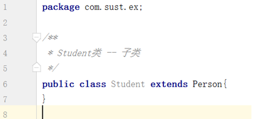
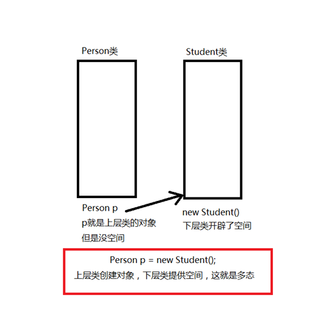

Java中面向对象的三大特性：封装、继承、多态
在认识多态之前，需要先掌握继承的概念
继承--extends
Java是单继承，意思就是一个子类只能有一个父类。
如果一个类没有显示继承某一个类，那么这个类将继承Object。
补充：继承的好处是 减少代码的冗余量
例：创建两个普通类 Person（父类） Student（子类）
接下来让Student类继承Person类

此处只是举例，没有写相应的属性和方法。
如果Person中有非私有属性和方法，那么这些非私有的属性和方法都会被Student继承过来。
下面就是本文的核心内容
多态
对于多态，按字面来理解的话，就是一个物体的多种形态。如果去看比较官方的概念，那么可能会使你陷入迷茫的状态。
我说一个通俗易懂的概念：所谓多态，就是继承链中上层类的对象指向下层类的空间。
以刚才的Person和Student为例，Person和Student就构成了一个继承链，Person就
属于继承链中的上层类，而Student就是下层类（下层类可以有多个，只要在继承链上）。
下面用一张图来体现这个概念
